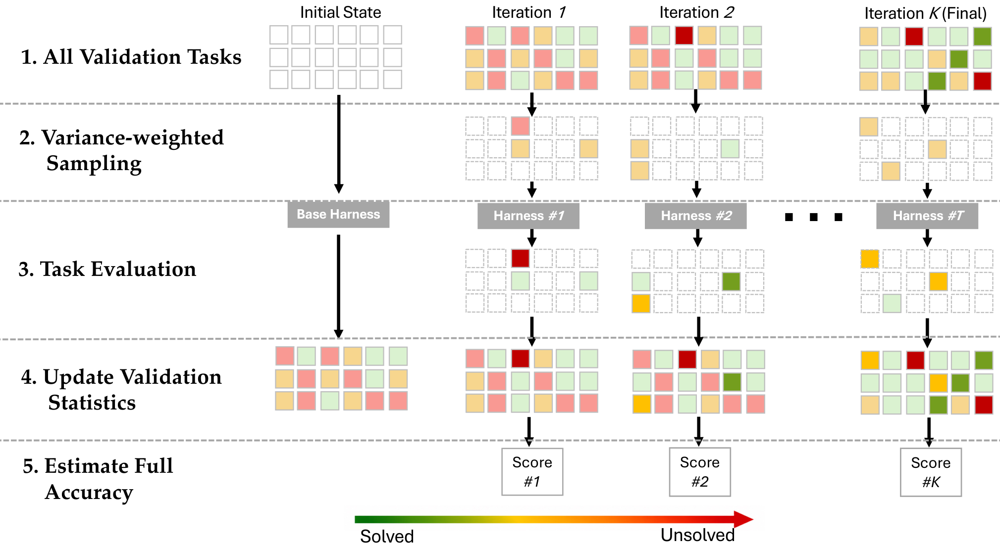

Task-CoEvolve: Stop Grading Every Harness on Every Task
Paper: arXiv 2608.20169 (v1, Aug 20 2026), by Atsuyuki Miyai, Kiyoharu Aizawa, Toshihiko Yamasaki — University of Tokyo (inferred from the authors' affiliations and the Agent4Science-UTokyo GitHub org — verify in the paper). Code: github.com/Agent4Science-UTokyo/Task-CoEvolve. Grounded in the arXiv abstract and HTML full text.
TL;DR
- Harness optimization (Meta-Harness-style iterative rewriting of harness code) spends most of its budget not on search but on evaluation: every candidate is scored on the full validation set every iteration, including tasks that every candidate passes or every candidate fails — which tell you nothing about which candidate is better. Task-CoEvolve's estimate is that these non-discriminative tasks are the majority of the set, and their share grows as the harness improves.
- The fix is to co-evolve the validation set with the harness: sample a small task subset each iteration with probability proportional to a variance-weighted informativeness score (tasks where past candidates disagreed), then correct for the biased sampling with Hájek / anchored-difference estimators so scores from different iterations — computed on different subsets — remain comparable.
- Evaluating only 20% of tasks matches full-set search: 49.3% vs 48.6% average accuracy on online text classification (it slightly exceeds full search), and 51.7% vs 52.8% on Terminal-Bench 2.1 with 5× fewer evaluations. Input-token cost drops 80% for GPT-5.6-Luna (2,888M → 579M) and 67% for Qwen3.6, with ~1.9× wall-clock speedup. Random subsampling at the same 20% budget lands 3.3 points worse on Terminal-Bench.
Why this matters
Every harness-evolution system in this tracker — Meta-Harness, the DGM line, HarnessCompass, SBCO, AutoDesign — has the same silent cost center: the fitness function. Proposing a candidate harness is one LLM call; scoring it is N agent rollouts, each potentially a multi-minute, multi-thousand-token episode. That's why published harness-optimization runs use validation sets of ~100 tasks and dozens of iterations, and why nobody runs them on the full SWE-bench. The field's answer so far has been to shrink the search: fewer candidates, fewer iterations, earlier stopping. Task-CoEvolve is the first work I've tracked that attacks the orthogonal axis — fewer evaluations per candidate — while keeping the search itself intact.
The statistical framing is the interesting part. Once you evaluate different candidates on different task subsets, naive score comparison breaks: iteration 7's candidate got the easy tasks, iteration 12's got the hard ones, and your archive's "best harness so far" is an artifact of sampling luck. The paper's contribution is importing survey-sampling machinery (inclusion-probability-weighted estimators) so that partial evaluations remain comparable across iterations. That's the same move importance sampling makes in off-policy RL, applied to the outer loop of harness evolution — and it's the piece that ad-hoc "just evaluate on a random subset" schemes are missing, which is exactly why Random-Resample underperforms by 3.3 points at the same budget.
There's also a nice conceptual echo: the validation set becomes a curriculum that tracks the frontier. Tasks that stop discriminating (everyone solves them, or nobody does) fade out of the sampling distribution; tasks where candidates disagree get oversampled. A task that was hard last round may be easy now, so the distribution keeps moving with the harness.

Figure 2 from the paper: the co-evolution loop — select an informative subset via variance weighting, evaluate the candidate harness on it, update per-task statistics, and estimate the full-set score with sampling-aware estimators.The core idea
The quantity you actually care about is a candidate harness $h$'s true full-set performance over validation tasks $\mathcal{T}$, $|\mathcal{T}| = N$:
where \(x_t(h) \in \{0,1\}\) is the outcome of harness \(h\) on task \(t\). Full-set search computes this exactly, at cost \(N\) per candidate. Task-CoEvolve replaces it with two components.
1. Variance-weighted task selection. Each task gets a sampling weight built from its outcome history across previously evaluated candidates:
where \(\bar{p}_t\) is task \(t\)'s historical mean success rate, \(\bar{p}_t(1-\bar{p}_t)\) is the Bernoulli variance (maximal when candidates disagree, zero when the task is always-solved or never-solved), \(\ell_t\) is a floor constant (0.125 for so-far-unsolved tasks, 0 otherwise — so hard tasks aren't permanently abandoned), and \(\lambda/\sqrt{n_t}\) (\(\lambda = 0.025\)) is an uncertainty bonus for tasks with few observations \(n_t\). Each iteration samples \(m = \lceil \rho N \rceil\) tasks proportional to these weights.
2. Sampling-aware score estimation. With inclusion probabilities \(\pi_t = \Pr[t \in S_k]\), the Hájek estimator reweights observed outcomes:
and the anchored-difference variant exploits the historical means as a control variate — estimate the deviation from history rather than the score itself:
The anchoring term is the clever bit: since most tasks behave like their history, the residual \(x_t(h) - \bar{p}_t\) has much lower variance than \(x_t(h)\), so the estimator is far tighter at small \(m\).
How it works
# Task-CoEvolve (condensed from §3 of the paper)
# Inputs: task pool T (|T| = N), sampling ratio ρ, harness optimizer (Meta-Harness)
Phase 0 — Initialization:
evaluate 2 baseline harnesses on the FULL set T
record outcomes as initial history {p̄_t, n_t}
for iteration k = 1..K:
Phase 1 — Selection:
for each task t: w_t = max(p̄_t(1-p̄_t), ℓ_t) + λ/√n_t
sample S_k of size m = ⌈ρN⌉ proportional to w_t # ρ = 0.2 typically
Phase 2 — Partial evaluation:
optimizer proposes candidate harness h_k
run h_k on tasks in S_k only; update p̄_t, n_t
Phase 3 — Estimation:
Ŝ(h_k) = Hájek or anchored-difference estimate # comparable across k
Phase 4 — Final selection:
return argmax_h Ŝ(h), ties broken toward earliest iteration
The base optimizer is Meta-Harness (the same iterative harness-rewriting loop this tracker covered separately), so the contribution is cleanly factored: nothing about proposal or acceptance changes, only who pays for fitness evaluation. Two testbeds:
- Online text classification (LawBench, Symptom2Disease, USPTO-50k; 130 validation examples): classifier LLM is GPT-OSS-120B at temperature 0, meta-agent is Claude Opus 4.6.
- Terminal-Bench 2.1 (89 command-line tasks): agent models GPT-5.6-Luna and Qwen3.6-35B-A3B.
Results
- Text classification (Table 1): full search 48.6±0.8% average test accuracy; Task-CoEvolve at a 20% budget: 49.3±0.8% — slightly above full search; at an extreme 7% budget it still reaches 47.6±0.9%. Naive fixed-subset and Random-Resample baselines at 20%: 47.2% and 48.2%.
- Terminal-Bench 2.1 (Table 2): full search 52.8% average pass rate; Task-CoEvolve at 20%: 51.7% — 1.1 points shy with 5× fewer evaluations. Naive: 47.2%; Random-Resample: 48.4%.
- Cost (Table 3): input tokens 2,888M → 579M (−80%) for GPT-5.6-Luna and 741M → 246M (−67%) for Qwen3.6; wall-clock 22.2h → 11.5h and 38h → 20.5h (~1.9× both).
The exceeding-full-search result on text classification is worth pausing on. The authors' framing (via the thread) is that non-discriminative tasks are pure noise for selection; my read is there may also be a mild regularization effect — noisy-but-unbiased fitness estimates make the outer loop less prone to overfitting the validation set, a known failure mode of harness evolution (inferred from the thread and general principle — verify in the paper's discussion).
How it connects
- meta-harness — Task-CoEvolve is a direct plug-in to Meta-Harness's loop: same proposer, same acceptance logic, 5× cheaper fitness. Any archive-based evolver (DGM-style) could adopt Phase 1/3 unchanged; the only requirement is logging per-task outcomes.
- rethinking-harness-evolution — that paper asked whether harness-evolution gains survive proper evaluation; Task-CoEvolve supplies the missing statistical machinery for comparing candidates under partial, shifting evaluation sets. The anchored-difference estimator is exactly the kind of tooling those critiques call for.
- evolving-benchmarks — "self-improving agents should evolve their benchmarks" argued the task set must move with the agent to keep teaching it; Task-CoEvolve is the cost-side dual: the task set must move with the harness to keep measuring it. Same co-evolution, different objective (discrimination, not difficulty).
- envharness-envrigger — EnvRigger reshapes environments around the policy's weaknesses; Task-CoEvolve reshapes the validation distribution around the candidate pool's disagreements. Both are frontier-tracking mechanisms; combining them (rigged environments as the evolving validation pool) is an obvious next experiment.
- fragility-self-improving-agents — the Salesforce re-evaluation showed self-improvement gains are variance-dominated across runs. That cuts both ways here: partial evaluation adds estimator variance on top of rollout variance, and the paper's ±0.8–0.9 stds suggest the margins (e.g., +0.7 over full search) are within noise — the safe claim is parity at 20% cost, not superiority.
Critical take
The idea is simple, well-executed, and almost certainly correct in direction — adaptive test selection is decades old in psychometrics (computerized adaptive testing) and the paper is essentially CAT for harness evolution, though I'd want the related-work section to acknowledge that lineage. Three caveats. First, the method needs outcome history to exist: Phase 0 burns two full-set evaluations, and the weights are only as good as the candidate pool's diversity — a homogeneous pool makes every task look non-discriminative and the sampler could collapse onto a few noisy tasks (the \(\ell_t\) floor and \(\lambda\) bonus are doing quiet load-bearing work here; the constants look hand-tuned). Second, binary outcomes are assumed throughout; continuous or partial-credit metrics would change the variance formula, and agentic evals are drifting toward graded checks (ThinkingBox-style state grading). Third, 89 tasks (Terminal-Bench) and 130 examples are small pools — at SWE-bench scale the win should be larger (more redundant tasks), but inclusion probabilities get tiny and the Hájek estimator's tail variance could bite; the paper doesn't test at that scale. None of this dents the practical takeaway: if you're running any harness-optimization loop today, per-task outcome logging plus this estimator is close to free money.
If you remember three things
- In harness optimization, evaluation — not proposal — is the budget, and most of it is spent on tasks that can't distinguish candidates; sample tasks by historical outcome variance instead.
- Different iterations evaluating different subsets is only sound with inclusion-probability-weighted estimators (Hájek / anchored-difference); skipping that correction is why naive subsampling loses 3+ points.
- 20% of the evaluations buys ~100% of the final performance: 49.3% vs 48.6% (text classification, above full search) and 51.7% vs 52.8% (Terminal-Bench 2.1), with 67–80% token savings and ~1.9× faster wall-clock.